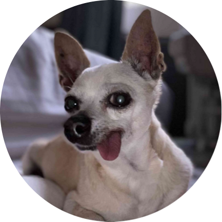

|

|
Lucky, The Dog 🐶
The Lucky Chihuahua Dog.
|
I am a dog who loves being loved. I love to bark at our neigbors and
annoy the head out of them until my servants (owners)
begs me to come inside because they prepared my snack already. I then
wiggle my tail at them making them think I am happy...
but in fact, I just have the desire to ask for something else - a tickle
and rub of my belly! I am like yelling at them - "Human, come one and give
me a rub!"
of which they sometimes hear me and follow my orders. I am, indeed, a
Lucky Dog.
My Hobbies
My Paw-Some Photos
My Stuff and Toys
- Comfortable fluffy bed
- brown colored cover
- Sometimes it is white
- Bone shaped pillow (of course)
- Little brown bear stuffy
Pet Experience
| Dates |
Experiences |
| unknown - 2012 |
I was the lucky, abandoned dog from nowhere... |
| 2012 - 2012 |
I was the lucky, rescued dog but not loved yet... |
| 2012 - Present |
I am the lucky, re-rescued dog by my current loving servants
(owners). Yey! |
Skills
| Barking |
⭐⭐⭐⭐⭐ |
| Sleeping |
⭐⭐⭐⭐⭐ |
| Eating |
⭐⭐⭐⭐ |
| Drinking |
⭐⭐⭐⭐⭐ |
|
| Asking for Rubs |
⭐⭐⭐⭐⭐ |
| Standing in two legs |
⭐⭐⭐⭐⭐ |
| Pissing off my servants |
⭐⭐⭐⭐ |
| Making my servants Smile |
⭐⭐⭐⭐⭐ |
|
Contact Me